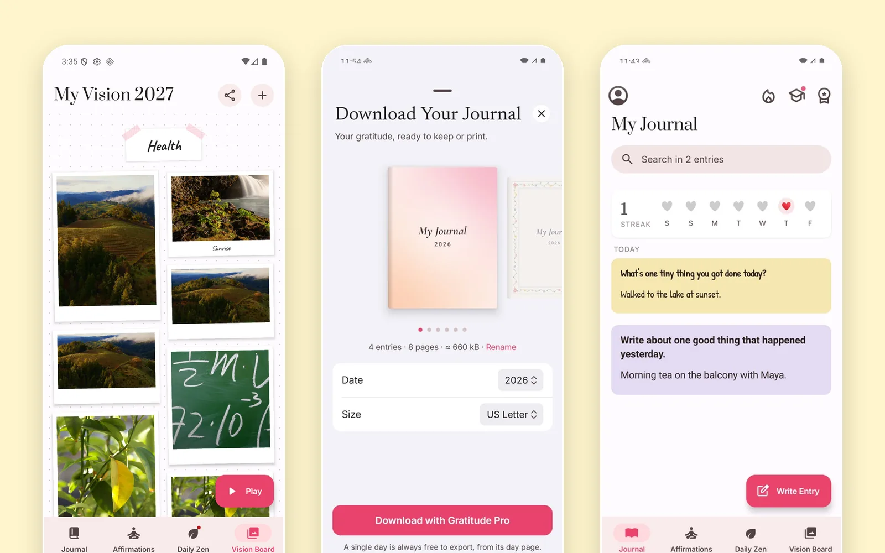

7.3.3Rolling out
Pick up where you left off, record a whole folder in your own voice, and fall asleep to a sleep timer.
- Affirmations remember where you stopped.
- Record a whole folder of affirmations in your own voice.
- A sleep timer for listening in bed.
7.3.2

A corkboard vision board, your journal as a PDF book, entry styles of your own and share cards.
- A new vision board: polaroid photos, taped section notes and drag to reorder.
- Download Your Journal: a PDF book of your entries, with covers and paper sizes to choose from.
- Pick a default colour for new entries, or let each one get a random colour. New entries keep the font you used last.
- Share any entry as a card in your page's style, with every word and photo, to WhatsApp, Instagram Stories and more.
- Prompts are easier to read in every font, and tapping below a photo on lined paper takes you back to writing.
- Restoring an iPhone backup no longer doubles your entries, and keeps your page style.
- Fixed "Couldn't make the card" when sharing an entry after restarting your phone.
7.3.0
Adding photos to entries works better, and the app feels faster.
- A new photo picker for your entries.
- Faster, smoother performance across the app.
7.2.8 – 7.2.9
New backgrounds and styles for your journal, and a vision board kit you can print.
- New journal styles and backgrounds.
- Printable Vision Board kit.
- Search suggestions when you add to your vision board.
- Your journal comes with you when you move to a new phone.
7.2.7
Guided courses inside the app, a new streak calendar, and voices for every affirmation folder.
- Guided Courses inside the app.
- A new streak calendar.
- Voices for every affirmation folder.
- Long pasted text no longer gets cut off, and Go to date opens the right entry.
7.2.0 – 7.2.6
Daily Zen, rebuilt, plus better voice recording, reminders and sharing from other apps.
- A rebuilt Daily Zen.
- Share text from other apps straight into a journal entry or an affirmation.
- Pick several photos at once for your vision board.
- A warning before recording if your phone is low on storage, and clearer voice recordings.
- Reminders set for the same time no longer delay each other.
- Smoother journal tab, better PDF exports and App Lock fixes.
7.1.5 – 7.1.9
Your Gratitude Pro subscription works on both platforms, plus the Gratitude Worksheet.
- Gratitude Pro bought on iPhone now works on Android too.
- Manage your subscription from inside the app.
- A new Gratitude Worksheet.
- A cleaner streak and calendar screen.
- Fixed prompts not changing, and backups moving between iPhone and Android.
7.1.0 – 7.1.4
A friendlier first day, a week of prompts for new journalers, and a more reliable Google Drive backup.
- A new onboarding experience.
- Seven days of hand-picked prompts for your first week.
- Google Drive backup, rebuilt.
- The app follows your phone's light or dark theme.
- A journal tab that matches the iPhone app, new streak icons and a simpler home screen menu.
7.0.5 – 7.0.9
Widget previews on Android 15, easier-to-tap widgets, and more control over prompts and reminders.
- Widget previews in the widget picker on Android 15 and later, and bigger buttons on widgets.
- Choose where your journal prompts come from in Settings.
- Set up Daily Zen reminders your way.
- Fixed challenge days not moving on, including around daylight saving changes.
7.0.0 – 7.0.4
A new way to join and finish challenges, and affirmations written for you on your phone.
- Challenges, rebuilt from the ground up, and you can copy challenge examples.
- Write affirmations with on-device AI, on supported phones.
- Numbered and bullet lists carry on when you edit an entry; press Enter twice to end a list.
- Affirmation images and audio come back when you restore.
- Fixes for the prompt and streak widgets.
6.9.4 – 6.9.8
Gentle nudges to write, waveforms for voice notes, and photos that centre on faces.
- Journal nudges to help you keep going.
- Waveforms for voice recordings, and a new mood layout.
- Photos in your journal centre on faces.
- Darker journal colours.
- Share your own Daily Zen story from the app.
- Two-pane vision board and Settings screens on tablets and in landscape.
- Fixed recordings not restoring and best streak counts.
6.9.0 – 6.9.3
Fresh home screen widgets, a journal home that matches the iPhone, and Daily Zen with pictures.
- New home screen widgets, which come back after a restore.
- Daily Zen widgets with images, and a new rectangular affirmation widget.
- Look back at the last two days of Daily Zen.
- A new journal home and colours, matching the iPhone app.
- Vision board suggestions for the new year.
Small updates with fixes only are grouped together. Looking for the iPhone app? See iPhone updates.